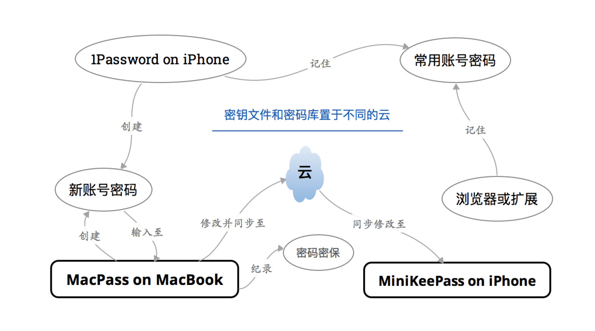

我现在全面使用 1Password 来管理我的账号密码及密保、软件许可等信息，在此简要地介绍 1Password 的优点：
- 全平台且优美；
- 支持指纹解锁；
- 数据库可备份在自己的云盘，如 Dropbox 等；
- 支持安全检查，如密码已使用时间、弱密码等；
- 集成了二步验证系统。
四年前我更换了手机号，尝到了帐号找回或重注册的种种烦恼，比如网易，我甚至上传了身份证照片以找回安全信息，后来也颇有后悔之意，因为我并不常用网易邮箱。如京东之类的帐号就删除订单记录等再重注册。且愿我的隐私信息还能称之为隐私。这段经历使我痛定思痛，又联想到更久远的时间丢失的帐号。于是，我就有了现在这一密码、密保等信息的管理方式，省心且放心。
必须告诉诸位，这一方式极其容易上手，所要做的不过是 安装几个应用，只是录入信息较为消耗时间。也许大部分女同胞及部分男同学并不在乎账户的相关问题，无非再注册的事情。可将我们的虚拟财产加以适当的保护至少是件听着还不错的事，所以即使你的帐号、密码等大同小异，也不妨记录下来，尤其是密保信息。

MacPass
MacPass 是 KeePass 官方推荐的第三方开源且免费的 Mac KeePass 客户端。MiniKeePass 是第三方开源且免费的 iOS KeePass 客户端。
MacPass 默认是只保护密码，我则点选了保护所有项目。因为为了方便我会在注释里存储许多重要信息，并不使用自定义等功能。加密轮次可以点击测试，会自动推荐一个值。但实际上我并不了解这样做是否更安全。
密码数据库后设置密码，任选一文件作为密钥文件或者新生成。将数据库存储在网盘同步盘，将密钥文件存储在另一网盘，分离存储也加强了安全性。若完全不愿意借助云，则可以存储在移动介质。
MiniKeePass
在 iPhone 上使用 MiniKeePass 应用：在 Mac 上更新密码后，在 iPhone 上将网盘新同步的密码库导出到 MiniKeePass 中打开，原密码库将被覆盖。
另外，可以在 MiniKeePass 中再新建一个数据库，在 iPhone 上注册新账号时，可以纪录用户名，并生成密码。之后，再在 Mac 上录入原数据库。不建议 在 MiniKeePass 中的原数据库（即网盘同步的数据库）纪录 iPhone 上注册的帐号，虽然从 MiniKeePass 可以导入到网盘，但有的网盘会自动覆盖掉原数据库，可能会丢失 Mac 上还没来得及同步的数据。
辅助方案
iPhone 上也可使用 1Password 作两点用途：
- 记录常用帐号密码，诸多应用已支持自动输入，但密保信息仅纪录在 KeePass 中；
- 许多应用以支持 1Password 自动创建新账号和密码，而后在电脑上录入到 KeePass 客户端。
在 Mac 上可以使用浏览器或扩展如 LastPass 记住常用密码，但不要纪录密保信息等。这个帐号管理方法我已尝试两年有余，方法安全且主要涉及的应用均免费开源。我几乎不再记忆任何密码，也再也不担忧丢失帐号信息。而且部分网站的密保系统再复杂我也可以轻松应对。
最近，又对每次都要复制粘贴密码感到烦了。于是，我将自己的账号分为三个等级：
- 第一序列：涉及到财产的账号；
- 第二序列：不直接涉及财产但较为重要的；
- 第三序列：一般账号。
然后针对每一序列设计不同的密码规则，包含大小写字母、符号、数字，这样我就记住了所有密码。而 KeePass 最大的作用就是记录密保等关键信息。
诗云：安能摧眉折腰记密码，使我不得开心颜！
KeePass for Mac
KeePass for iOS
KeePass for Windows
KeePass for Android